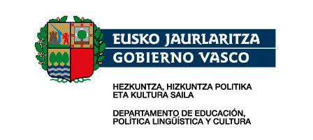

Titulu honen konpetentzia orokorra da ekipo-ondasunen mekanizazio bidezko fabrikazioa eta muntaia planifikatu, programatu eta kontrolatzea, fabrikatu beharreko produktuen prozesuari buruzko dokumentaziotik eta zehaztapenetatik abiatuta, eta kudeaketaren eta produktuaren kalitatea ziurtatuta; eta laneko arriskuen prebentziorako eta ingurumen babeserako sistemak gainbegiratzea.
Jokoak, jolaserako gorputz- eta kirol-ekintza indibidualak, taldekoak eta tresna bidezkoak eta oinarrizko egokitzapen fisikoko ekintzak irakatsi eta dinamizatzea ingurunearen eta parte-hartzaileen ezaugarrietara egokituta, erabiltzailearen asebetetzea eta kalitateko lehiakortasun-maila lortuz eta aurreikusitako kostu-mugen barruan
A eredua goizez 8:00tatik 14:30era Sarrerako berariazko proba (2015eko otsailaren 4ko erabakia) Helburu orokorrak Heziketa ziklo honen helburua bitxigintza-objektuen proiekzio artistikoan trebeak izango diren espezialistak prestatzea da. Jasoko duten formakuntza tekniko-artistikoa izango da eta honako gaitasun hauek eskuratuko dituzte: Bitxigintzako piezak sortzea eta fabrikatzea, nork bere diseinuetan oinarrituta edo besteen kontzeptuak eta ideiak interpretatuz. Bitxigintza artistikoa gauzatzeko beharrezkoak diren prozesuak aztertu eta garatu. Arlo honetan erabiltzen diren teknika eta estiloak ezagutu eta erabili. Proiektuaren bozetoak burutu. Tailerrean planoak marraztu (fabrikazioa) CAD eta CAM-en erabilpenean (3Dko diseinua eta inprimaketa) ezagupenak eskuratu Piezak fabrikatzean material berrien erabilpena aztertu. Produktuak merkatuan izan dezakeen bideragarritasuna eta merkatuko arauak aztertu.
Teknikari honi, produkzio-sistemaren barruan, lanbide-prestakuntzari buruzko ondoko baldintza orokorrak eskatzen zaizkio: Dagokion neurrian, nekropsiak egitea, biopsiak prozesatzea eta lagin klinikoen azterketa zitologikoa burutzea, emaitza teknikoak interpretatuz eta baliozkotuz, diagnosi klinikorako edo mediko-legalerako euskarri gisa baliagarri izan daitezen; halaber, berari dagokion neurrian, lana antolatu eta programatzea, zerbitzuaren kalitate-irizpideak betez eta baliabideak optimizatuz, dagokionaren ikuskapenarekin.